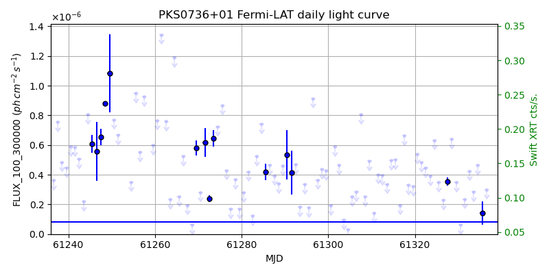
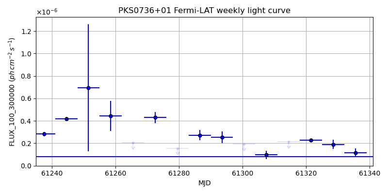
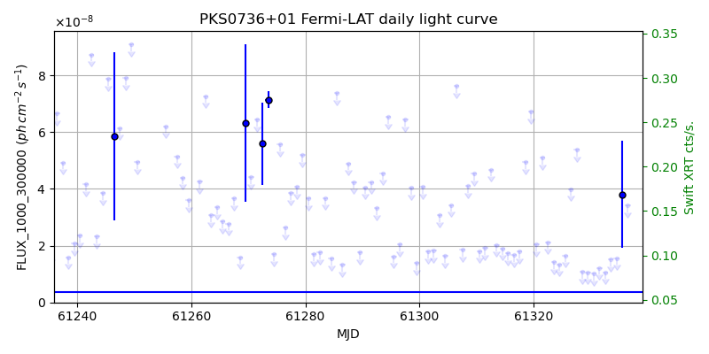
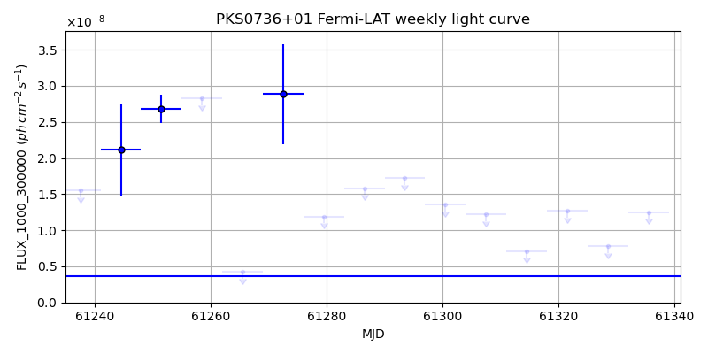

LAT Lightcurve site: https://fermi.gsfc.nasa.gov/ssc/data/access/lat/msl_lc/source/PKS_0736p01
Swift site: https://www.swift.psu.edu/monitoring/source.php?source=PKS0736+01
NED: Query
Time of last update of this page: UT: 2026-10-17 15:19 (MJD: 61330.638)
| Property | Value |
|---|---|
| R.A. | 7:39:18.00 |
| Dec. | 1:37:04.8 |
| z | 0.189 |
| 3FGL SpectrumType | LogParabola |
| 3FGL PL Index | |
| 3FGL Flux_100_300000 | 8.16e-08 1 / (s cm2) |
| 3FGL Flux_1000_300000 | 3.68e-09 1 / (s cm2) |
| 3FGL Flux >200 GeV | 1.72e-13 1 / (s cm2) |
| 3FGL Extrap. Crab >200 GeV | 0.00 |
| 3FGL Flux After EBL Absorption >200GeV | 1.06e-13 1 / (s cm2) |
| 3FGL EBL Crab Fraction >200GeV | 0.00 |

| MJD | dMJD | Flux | dFlux | Frac3FGL | FracCrab>200GeV | EBLFracCrab>200GeV |
|---|---|---|---|---|---|---|
| 61325.50 | 0.50 | 3.50e-07 | 0.00e+00 | 0.00 | 0.00 | 0.00 |
| 61326.50 | 0.50 | 2.29e-07 | 0.00e+00 | 0.00 | 0.00 | 0.00 |
| 61327.50 | 0.50 | 3.53e-07 | 2.77e-08 | 4.32 | 0.00 | 0.00 |
| 61328.50 | 0.50 | 6.39e-07 | 0.00e+00 | 0.00 | 0.00 | 0.00 |
| 61329.50 | 0.50 | 3.49e-07 | 0.00e+00 | 0.00 | 0.00 | 0.00 |

| MJD | dMJD | Flux | dFlux | Frac3FGL | FracCrab>200GeV | EBLFracCrab>200GeV |
|---|---|---|---|---|---|---|
| 61293.50 | 3.50 | 2.53e-07 | 5.30e-08 | 3.10 | 0.00 | 0.00 |
| 61300.50 | 3.50 | 1.94e-07 | 0.00e+00 | 0.00 | 0.00 | 0.00 |
| 61307.50 | 3.50 | 9.65e-08 | 3.82e-08 | 1.18 | 0.00 | 0.00 |
| 61314.50 | 3.50 | 2.14e-07 | 0.00e+00 | 0.00 | 0.00 | 0.00 |
| 61321.50 | 3.50 | 2.27e-07 | 1.24e-08 | 2.77 | 0.00 | 0.00 |

| MJD | dMJD | Flux | dFlux | Frac3FGL | FracCrab>200GeV | EBLFracCrab>200GeV |
|---|---|---|---|---|---|---|
| 61325.50 | 0.50 | 1.65e-08 | 0.00e+00 | 0.00 | 0.00 | 0.00 |
| 61326.50 | 0.50 | 4.00e-08 | 0.00e+00 | 0.00 | 0.00 | 0.00 |
| 61327.50 | 0.50 | 5.38e-08 | 0.00e+00 | 0.00 | 0.00 | 0.00 |
| 61328.50 | 0.50 | 1.07e-08 | 0.00e+00 | 0.00 | 0.00 | 0.00 |
| 61329.50 | 0.50 | 1.06e-08 | 0.00e+00 | 0.00 | 0.00 | 0.00 |

| MJD | dMJD | Flux | dFlux | Frac3FGL | FracCrab>200GeV | EBLFracCrab>200GeV |
|---|---|---|---|---|---|---|
| 61293.50 | 3.50 | 1.73e-08 | 0.00e+00 | 0.00 | 0.00 | 0.00 |
| 61300.50 | 3.50 | 1.36e-08 | 0.00e+00 | 0.00 | 0.00 | 0.00 |
| 61307.50 | 3.50 | 1.22e-08 | 0.00e+00 | 0.00 | 0.00 | 0.00 |
| 61314.50 | 3.50 | 7.10e-09 | 0.00e+00 | 0.00 | 0.00 | 0.00 |
| 61321.50 | 3.50 | 1.27e-08 | 0.00e+00 | 0.00 | 0.00 | 0.00 |
--------------------------------------------------------- Using user-supplied coords: 7:39:18.00 1:37:04.8 2000 --------------------------------------------------------- FLWO UT night of: 2026-10-18 Local Sid. @ Midnight: 01:23 Sunset (-15.0) (local, UT): 18:56 01:56 Sunrise (-15.0) (local, UT): 05:22 12:22 Moonrise (local, UT): Moonset (local, UT): 22:59 05:59 Moon phase: 0.47 --------------------------------------------------------- AzTime LSID UT Obj_el Obj_az Mn_el Mn_az Sep. --------------------------------------------------------- 18:56 20:18 01:56 -55.6 17.0 30.5 195.3 154.9 19:26 20:48 02:26 -53.0 29.1 28.5 202.5 155.0 19:56 21:18 02:56 -49.4 39.7 25.9 209.3 155.1 20:26 21:48 03:26 -45.0 48.6 22.6 215.6 155.2 20:56 22:19 03:56 -39.9 56.1 18.8 221.3 155.3 21:26 22:49 04:26 -34.4 62.6 14.5 226.6 155.4 21:56 23:19 04:56 -28.6 68.1 9.9 231.4 155.5 22:26 23:49 05:26 -22.5 73.1 5.0 235.7 155.6 22:56 00:19 05:56 -16.3 77.6 0.2 239.8 155.8 23:26 00:49 06:26 -10.0 81.9 -5.5 243.5 155.9 23:56 01:19 06:56 -2.3 85.9 -11.3 247.0 156.0 00:26 01:49 07:26 3.0 89.8 -17.0 250.4 156.1 00:56 02:19 07:56 9.2 93.8 -22.8 253.6 156.3 01:26 02:49 08:26 15.5 97.9 -28.7 256.7 156.4 01:56 03:19 08:56 21.8 102.2 -34.7 259.8 156.5 02:26 03:49 09:26 28.0 106.9 -40.7 263.0 156.6 02:56 04:20 09:56 34.0 112.2 -46.8 266.4 156.7 03:26 04:50 10:26 39.8 118.2 -52.8 270.1 156.8 03:56 05:20 10:56 45.3 125.2 -58.9 274.3 156.9 04:26 05:50 11:26 50.2 133.7 -64.9 279.6 157.0 04:56 06:20 11:56 54.4 143.8 -70.8 287.0 157.1 05:22 06:46 12:22 57.3 154.3 -75.7 297.1 157.2 --------------------------------------------------------- Dark hours >55 deg.: 0.36 srcstart (UT): 2026-10-18 12:00 srcend (UT): 2026-10-18 12:22